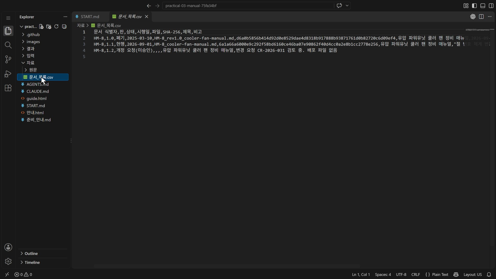
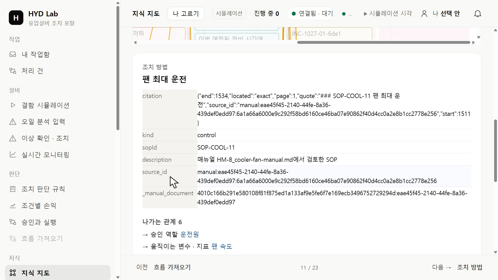
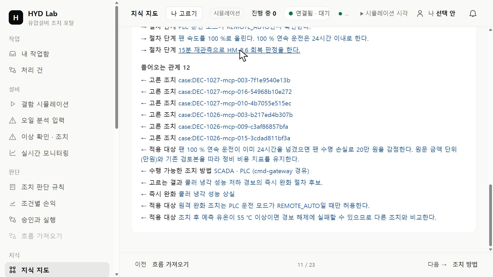
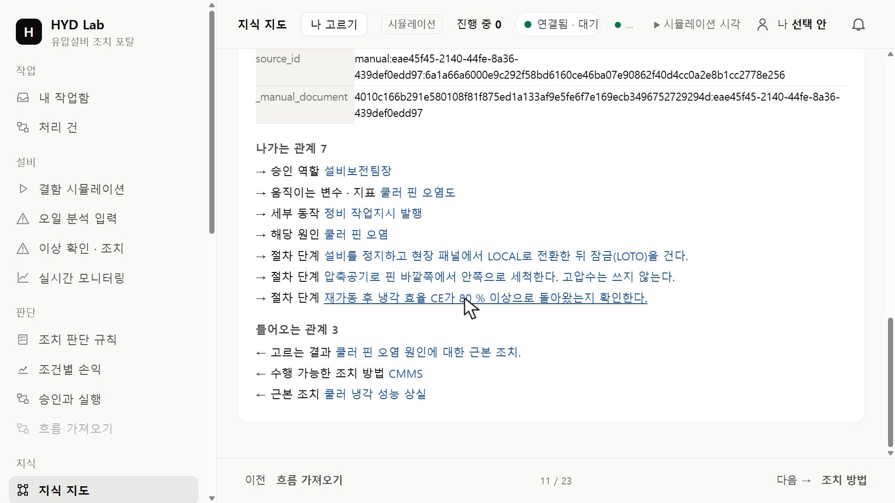
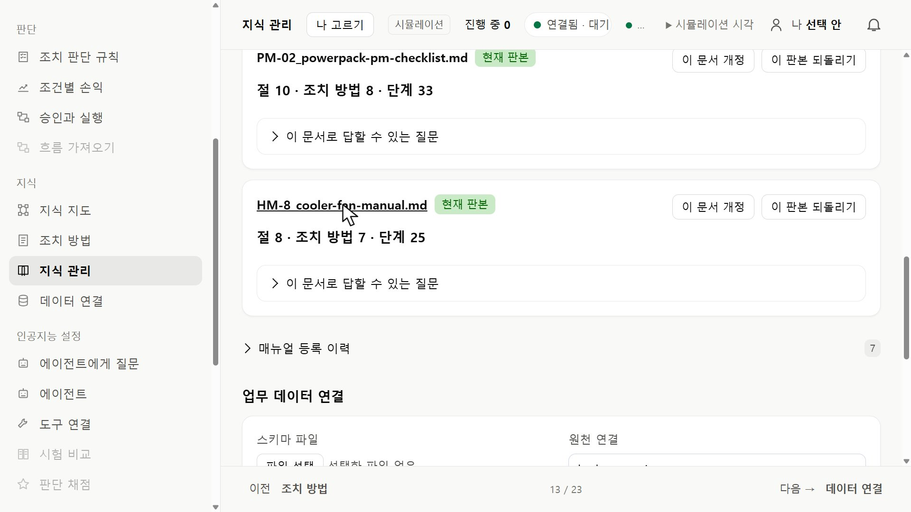
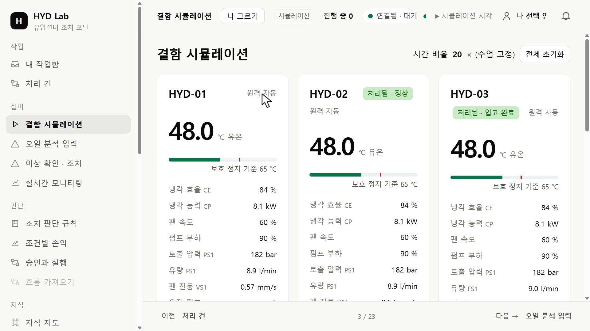

HYD · 실습 가이드포털 지식과 매뉴얼 원문 대조하기
포털에 등록된 HM-8 지식을 문서 목록의 현행 원문과 나란히 놓고, 팬 최대 운전과 쿨러 핀 세척을 하기 전에 확인할 항목을 원문 절에 연결합니다. 현장에 남아 있는 다른 판도 함께 대조합니다.
01 시작하기
압축을 푼 폴더를 VS Code에서 열고 START.md를 읽으세요. 이번 실습은 포털 관찰과 기록이며 코드를 만들지 않습니다.
자료/문서_목록.csv HM-8의 판·상태·해시
자료/원문/ 문서 목록에 파일이 있는 판
결과/대조_기록.md 작성할 기록
두 원문을 나란히 보려면 탐색기에서 두 파일을 함께 선택하고 마우스 오른쪽 버튼 → 선택한 항목 비교를 누릅니다.
02 요구 정하기
문서 목록을 보고 어느 판을 포털 지식과 대조할지 먼저 정하고 그 이유를 적으세요. 두 작업(팬 최대 운전, 쿨러 핀 세척)에 대해 무엇을 확인해야 작업을 시작할 수 있는지 원문에서 찾습니다. 절차 단계만 보지 말고 그 작업을 가리키는 다른 절도 찾습니다.

탐색기 자료 → 문서_목록.csv를 연 화면(판 · 상태 · SHA-256) · 누르면 크게 보기03 포털에서 대조하기
포털 왼쪽 메뉴의 지식 묶음에서 지식 지도를 열고 검색 칸에 작업 이름(예: 팬 최대 운전)을 넣어 조치 방법 칸의 작업을 누르세요. 상세 칸은 지도 아래에 나옵니다. 화면에 보이는 단계·조건·근거 표시를 기록하고 원문 문장과 나란히 적습니다.

조치 방법 상세의 citation과 source_id — 끝의 해시 앞자리를 문서 목록의 판 해시와 비교 · 누르면 크게 보기나가는 관계에서 승인 역할과 절차 단계를, 들어오는 관계에서 「적용 대상」으로 이어진 규칙을 읽습니다.

들어오는 관계의 적용 대상 규칙들 · 누르면 크게 보기
다른 작업의 상세: 승인 역할과 절차 단계 · 누르면 크게 보기지식 관리에서는 HM-8 등록 여부만 확인합니다.

등록된 매뉴얼 목록의 HM-8 현재 판본 · 누르면 크게 보기작업 직전에 읽을 현재 값은 설비 묶음의 결함 시뮬레이션 설비 카드에서 읽고 시각과 함께 적습니다. 화면에 없는 값은 미확인으로 둡니다.

설비 카드의 현재 유온·냉각 효율·팬 속도·운전 모드 · 누르면 크게 보기매뉴얼 등록·미리보기·에이전트 추출 요청·적재, 운전 모드·결함 버튼은 누르지 않습니다. 직접 추가 적재는 마지막 교대 실습에서 제공 보충 매뉴얼로 합니다.
04 결과 확인하기
- 각 항목이 원문 절과 원문 문장으로 이어지나요?
- 절차 밖의 절에 있는 조건도 찾았나요?
- 경계 표현을 원문 그대로 옮겼나요?
- 다른 판과의 차이를 어느 판의 어느 문장인지와 함께 적었나요?
- 원문만으로 적용 범위가 정해지지 않은 문장을 어떻게 처리했는지, 다르게 정하면 무엇이 바뀌는지 적었나요?
- 문서의 기준값과 작업 직전에 읽을 현재 값을 다른 칸에 적었나요?
포털에서 찾지 못한 항목은 찾지 못했다고 적습니다. 추정으로 채운 대조는 확인한 대조가 아닙니다.
05 저장하기
결과/대조_기록.md를 저장하고 다시 열어 확인하세요. 보관할 결과는 USB 또는 개인 클라우드에 복사합니다.
다음 실습은 이 대조를 원문에서 직접 추출하는 기능으로 이어집니다. 다음 실습은 이 기록 없이도 시작할 수 있습니다.